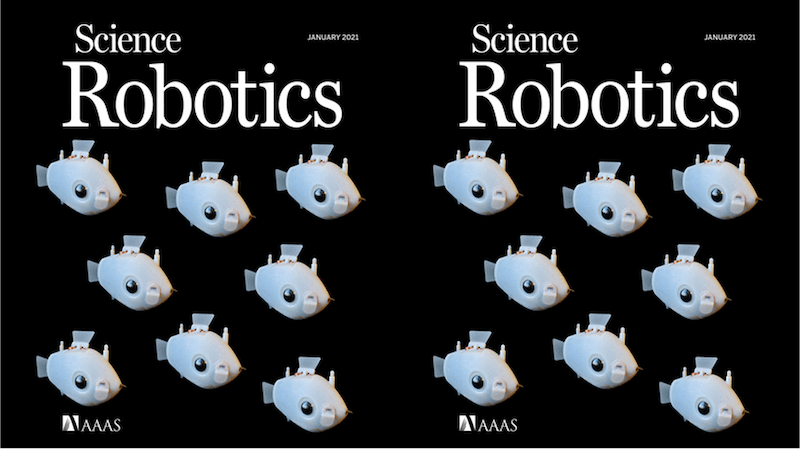
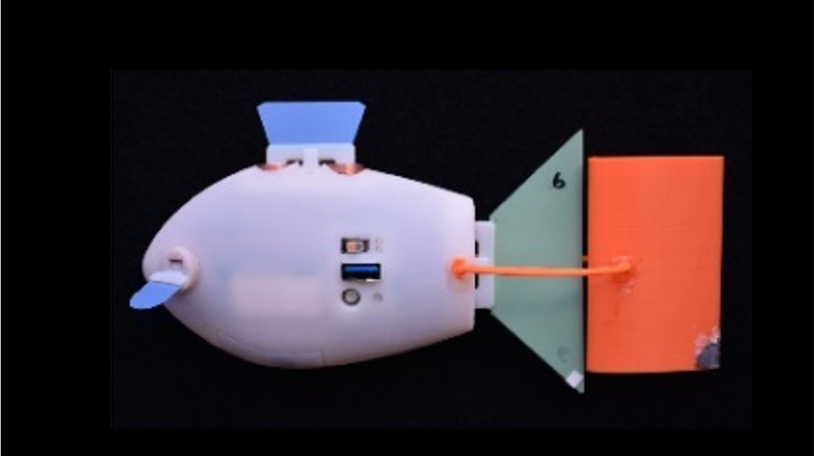
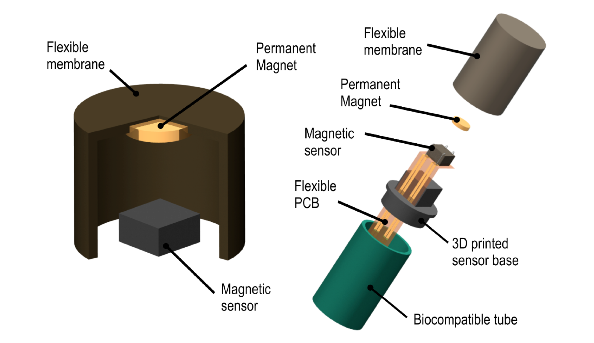
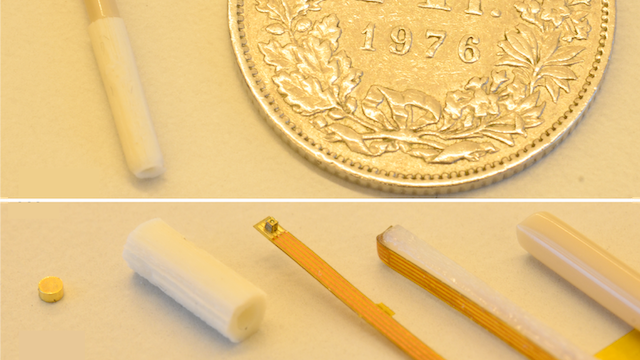
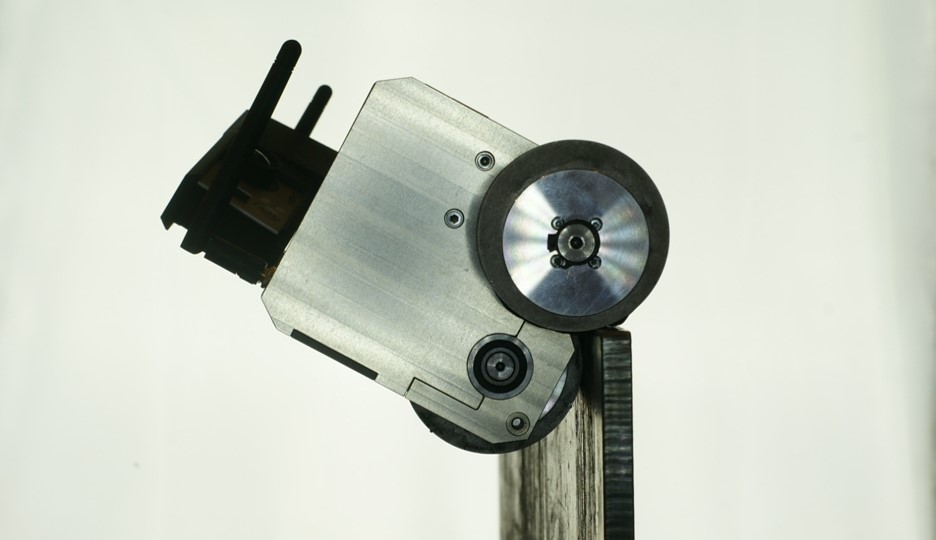

Research Interests and Relevance
I am interested in introducing intelligence to engineered systems, thereby enabling them to perceive, reason, and act autonomously. In my research, I focus on self-organized and decentralized multi-agent systems. In addition, I work on bioinspired smart designs for robotics and materials.
Multi-agent systems can get enormous mileage from cooperation; as a result, system-level capabilities emerge that are unattainable by individual agents. Much of my inspiration comes from nature where ant colonies, bee swarms, or fish schools display a range of impressive collective behaviors. Many of these behaviors (e.g., ant foraging) are largely rule-based and result from the accumulation of local interactions between individuals across time and space. It is those agent interactions I am most intrigued by. My research asks how individual agents should interact locally to achieve a system-level global goal. In particular, my work in computer science aims at creating algorithms for decentralized coordination that lead to provable, scalable, and robust collective behaviors, for instance in fetching warehouse items with robotic fleets.
This work has far-reaching impacts on human society. The reliability of large-scale systems, such as traffic, finance, or electric power, is of growing importance in a globally connected as well as increasingly automated and accelerated world. Failures of such systems may critically affect millions of people. Decentralized and self-organized designs can improve the robustness of largely autonomous systems while also increasing their scalability; such systems become more redundant and less vulnerable to human error and malicious attacks. In addition, self-organized systems may enable new ventures, which are currently unfeasible due to impaired real-time communication with, or the safety of, human operators. For instance, teams of robots could provide shelter and harvest energy on distant planets long before humans arrive, or speed up search and rescue missions in hazardous areas here on earth. More immediately, I expect the insights from my research to have a direct impact on the organization and coordination of large automated systems, spanning from self-driving cars and automated warehouses to high-frequency trading and smart communication and power grids.
As the diversity of these applications might suggest, my work is by nature multidisciplinary and requires various types of activities: I engage in theoretical reasoning; build mathematical models; implement computer simulations; design, fabricate and program robots; run physical experiments; analyze data; and prepare scientific reports and presentations. In conducting this research at Harvard University, I have had the opportunity to work with scholars from all over the world on exciting, collaborative projects. Here, below, are descriptions of some of these projects.
Biologically Inspired Underwater Robots for Three-Dimensional Collective Behaviors
Harvard University (2015-present), Self-Organizing Systems Research Group (Prof. Radhika Nagpal)
Publications:
Berlinger et al. 2021 (SciRo)
Berlinger et al. 2021 (ICRA)
Soltan, O'Brien, Berlinger et al. 2018
Berlinger et al. 2017
The natural world abounds with self-organizing collectives, where large numbers of relatively simple agents use local interactions to produce impressive global behaviors. Such biological collectives exhibit several properties that are highly desirable from an engineering perspective: they are decentralized, providing robustness to failure of agents, and they rely primarily on local sensing and nearest neighbor interactions, exhibiting high degrees of scalability and adaptability.
Inspired by reef fish schools, the Blueswarm project aims to develop an experimental robotics platform for the investigation of self-organized collective behaviors in 3D space. To this end, we design, fabricate, and test miniature autonomous underwater robots with 3D vison-based perception and 3D fin-propelled locomotion.
In our latest work, we demonstrated 3D collective behaviors with Blueswarm using only vision-based coordination mediated through blue light. We showed that complex and dynamic 3D collective behaviors – synchrony, aggregation-dispersion, milling, search-capture – can be achieved through sensing minimalist and noisy impressions of the surroundings and without complete knowledge of neighbors. Our results provide new insights into the power of implicit coordination and are of interest for future underwater robots that display collective capabilities on par with fish schools for applications such as environmental monitoring and search in coral reefs and coastal environments.

Fish-Like Swimming and Schooling with an Autonomous and Biomimetic Robot
Harvard University (2018-2020), Self-Organizing Systems Research Group (Prof. Radhika Nagpal), and Lauder Lab (Prof. George Lauder)
Publications:
Berlinger et al. 2021
Saadat, Berlinger et al. 2021
The swimming performance and maneuverability of fish remain unparalleled when compared to robotic systems. However, robotic systems can be used to study fish-like swimming and narrow the gap between fish and fish-like robots. We designed a small and self-propelled underwater robot, the Finbot, that is autonomous and highly maneuverable, using four independently controllable fins and sensory feedback for precise underwater locomotion. Different caudal fins can be attached magnetically to reconfigure Finbot for swimming at top speed or minimal cost of transport. We replicated three key characteristics of swimming fish - linear speed-frequency relationships, U-shaped costs of transport, and reverse Kármán wakes - to qualify Finbot as an experimental platform for addressing open questions in aquatic locomotion, such as optimized propulsion for new fish robots, and the hydrodynamic principles governing the energy savings in schools of fish.
In our most recent work, we used a modified version of Finbot to support novel insights on hydrodynamic advantages of fish schooling from theory and simulation. We deomonstrated experimentally that fish can save power through in-line schooling. To this end, we developed a biomimetic interaction-based propulsor and measured its power consumption in swimming experiments.

Dielectric Elastomer Actuators for Soft Robotics
Harvard University (2017-2020), Microrobotics Lab (Prof. Robert Wood), Materials Discovery and Applications Group (Prof. David Clarke), and Self-Organizing Systems Research Group (Prof. Radhika Nagpal)
Publications:
Duduta, Berlinger et al. 2020
Duduta, Berlinger et al. 2019
Berlinger et al. 2018
Dielectric elastomer actuators (DEAs) are compliant capacitors that operate as soft electro-mechanical transducers and convert electrical energy into mechanical work. In a novel design approach, we were able to avoid pre-stretch of the elastomers and multiply actuation forces by stacking several actuation layers. Such DEAs were strong enough to act as propulsive fins on an underwater robot in one of the first demonstrations of autonomous DEA-driven vehicles.
Currently, we explore soft DEA robots conducive to multi-modal locomotion. Our bending beam design approach enables multiple gaits including crawling, hopping, jumping, and rolling. Gaits are selected and controlled by choice of actuation pattern, i.e., the frequency and magnitude of the applied input voltage to the DEA. Such DEA robots can be used as versatile experimental devices to validate locomotion models, in both natural and engineered systems.
Force Sensing Catheter for the Treatment of Cardiac Arrhythmia
ETH Zurich (2014), Multi-Scale Robotics Lab (Prof. Bradley Nelson)
Publications:
Chatzipirpiridis, Gervasoni, Berlinger et al. 2014
Force Sensing Catheter is a medical device for the treatment of cardiac arrhythmia, during which the monitoring of contact forces applied to body tissue is critical. The ablation catheter has a miniscule diameter of 3.5mm and is suitable for in vivo applications. It uses a Hall sensor to infer axial and lateral contact forces. Such forces push on its flexible distal end during ablation and change the position of an embedded permanent magnet relative to the sensor. The resulting magnetic field is then translated to the corresponding forces, using a mapping found in simulation and during catheter calibration.
My Semester's thesis included the design, calibration, and validation of Force Sensing Catheter. In addition, I created a demonstration using the catheter to sample the texture and flexibility of tissue for diagnostic purposes.


Ship Inspection Robot for Semi-Autonomous Safety Inspection of Cargo Ships
ETH Zurich (2012-2013), Product Development Group Zurich (Prof. Mirko Meboldt) and Autonomous Systems Lab (Prof. Roland Siegwart)
Publications:
Berlinger et al. 2016
Ship Inspection Robot (SIR) is a robust, cheap, and easy to operate inspection tool for the maritime transport sector. SIR can be operated while cargo ships are sailing, thereby reducing inspection time in dry docks. Thanks to its innovative overlapping wheel configuration, SIR is the first wheeled inspection robot that has the ability to overcome a broad variety of obstacles commonly encountered in cargo ships. Such obstacles include T-, L-, I-, and bulb-shaped stiffeners as well as convex and concave edges.
SIR was realized during a year-long Focus Project at ETH Zurich together with industry partner GE Inspection Robotics. I was leading the research team consisting of 10 interdisciplinary undergraduate students (6 mechanical and 2 electrical engineers, 2 industrial designers). For my Bachelor's thesis, I developed an Obstacle Climbing Controller for SIR, which reduced motor torque peaks inside obstacles by up to 40% and enabled smooth obstacle passing. The obstacle overcoming design aspects of SIR got patented internationally.

In the Media
My research occasionally receives coverage in the print or visual media, and I aim to write pop-science articles about my work to engage a broader audience in topics like artificial intelligence and automation. Opinions stated in media contents I did not contribute to do not necessarily reflect my own views.
WIRED, Jan 2021

Science Magazine, Jan 2021
Cosmos Magazine, Jan 2021
Faculti, April 2021
Reatch, Aug 2017

Marine Maintenance, Sep 2015